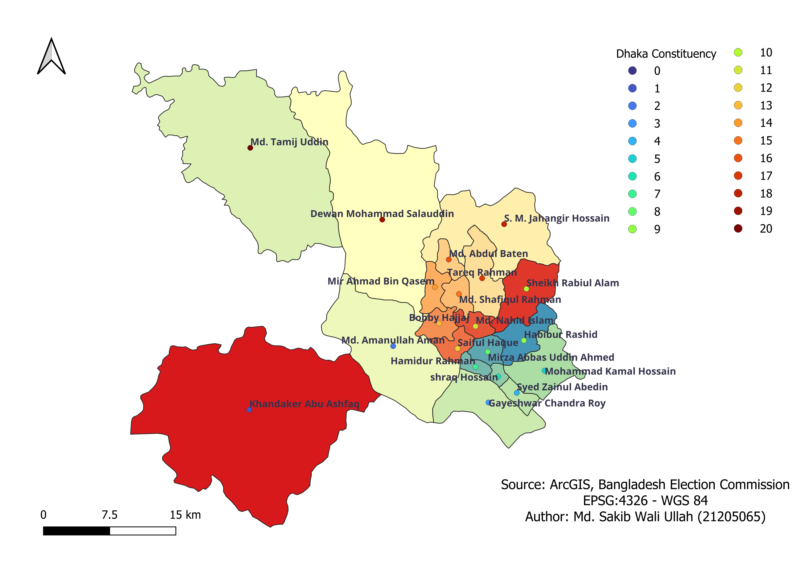
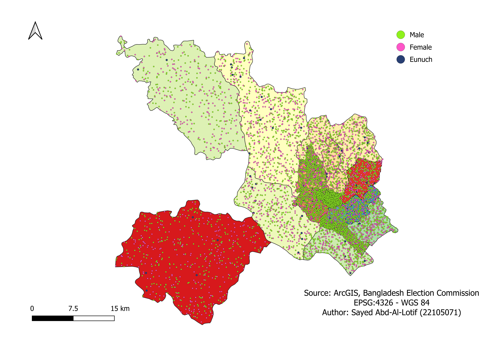
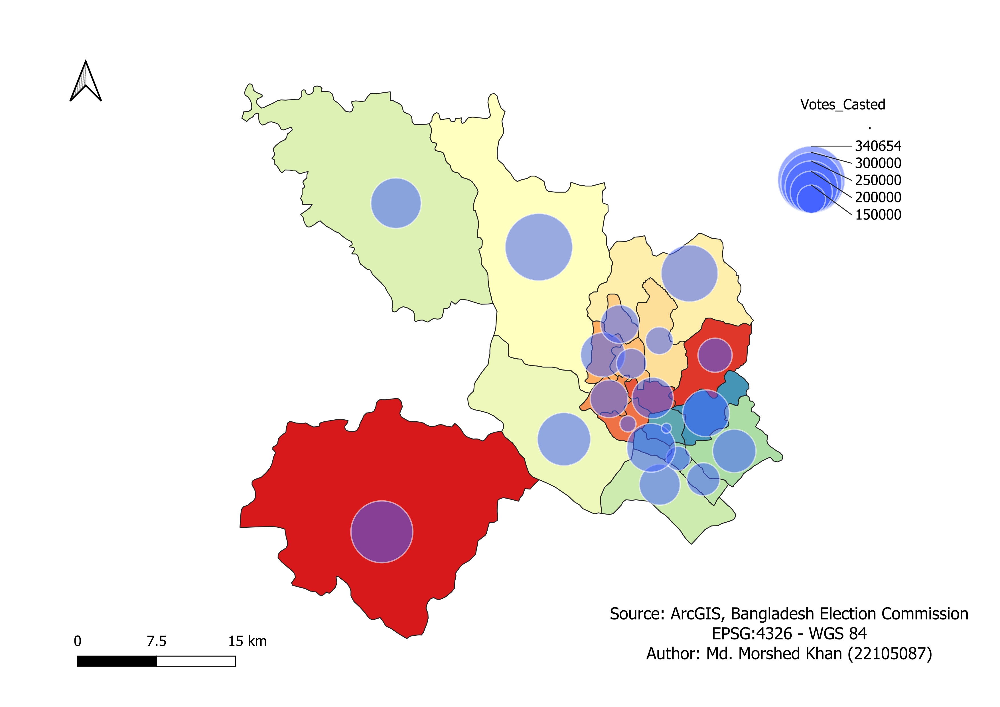
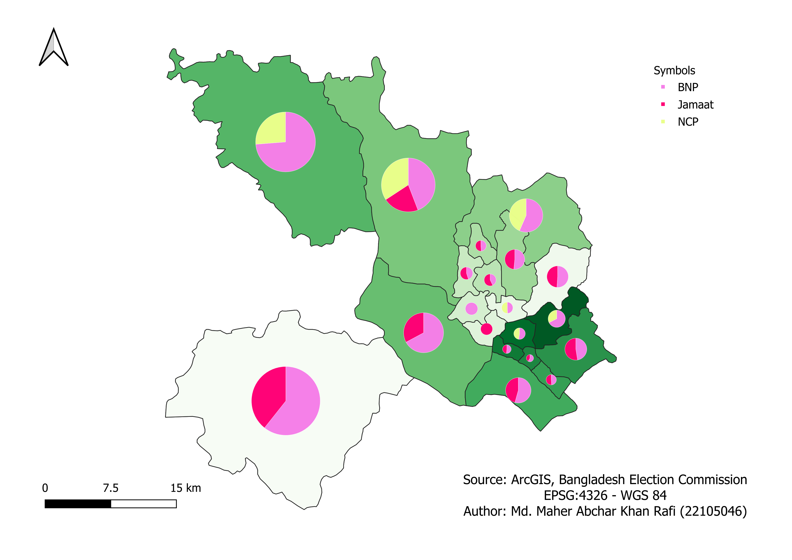

Introduction
This StoryMap explores the 13th election in Dhaka’s 1–20 constituencies. It uses maps to show constituency boundaries, candidate locations, voter distribution, turnout, party vote patterns, vote margin, and party vote share.
1. Dhaka 1–20 Constituency Boundaries

This first map introduces the study area. It shows Dhaka’s twenty parliamentary constituencies using different colours. This helps the reader understand the spatial structure before looking at election results.
Open Interactive Boundary Map2. Candidate and Parliamentary Representation

This map shows the location of candidates or parliamentary representatives. It connects political actors with the constituencies they represent.
3. Gender Distribution of Voters

This dot map shows the distribution of male, female, and eunuch voters across Dhaka’s constituencies. It helps explain the voter composition of the study area.
4. Votes Cast by Constituency

This map shows the total number of votes cast in each constituency. Larger circles represent higher vote counts.
5. Percentage of Voter Turnout

This map shows voter turnout percentage. It is different from total votes cast because a constituency may have many votes but still have a lower turnout rate.
Open Interactive Turnout Map6. BNP and Jamaat-E-Islami Vote Pattern

This bivariate map compares BNP and Jamaat-E-Islami vote patterns. It helps identify where BNP was stronger, where Jamaat-E-Islami was stronger, and where both parties showed vote presence.
Open Interactive Choropleth Map7. Vote Margin Between Jamaat-E-Islami and BNP

This map shows the vote margin between Jamaat-E-Islami and BNP. Smaller margins show closer competition, while larger margins show stronger dominance by one party.
Open Interactive Vote Margin Map8. Party Vote Share

This pie chart map shows the vote share of major parties in each constituency. It gives a final comparison of party competition across Dhaka.
Conclusion
These maps show that election results are also spatial patterns. Constituency boundaries, voter distribution, turnout, party vote patterns, vote margins, and vote share all help explain the electoral geography of Dhaka’s 1–20 constituencies.